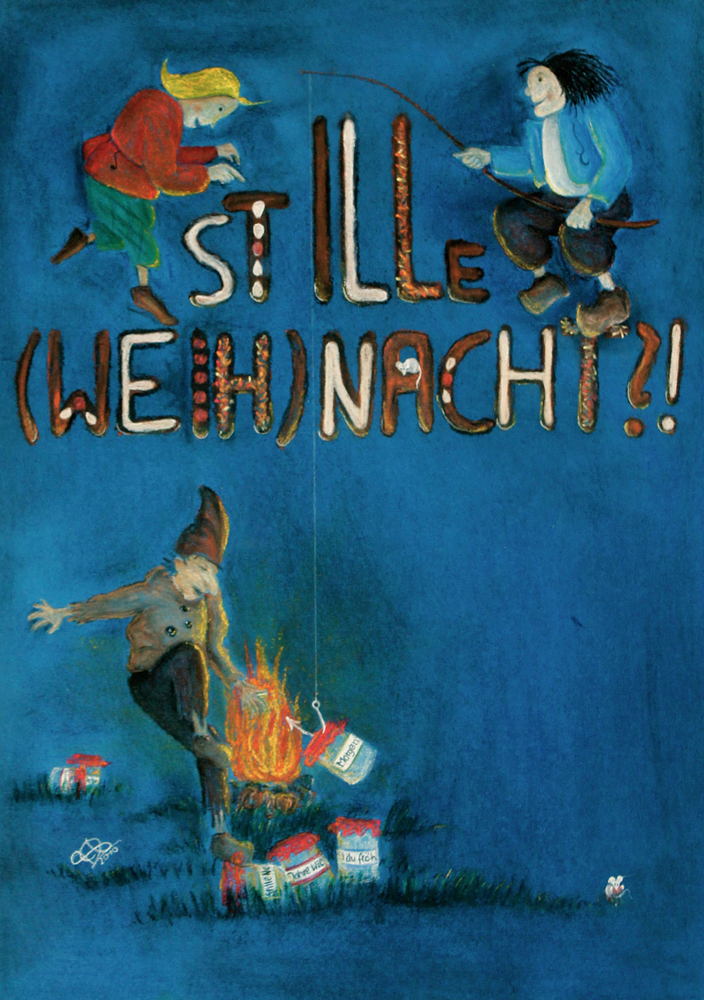
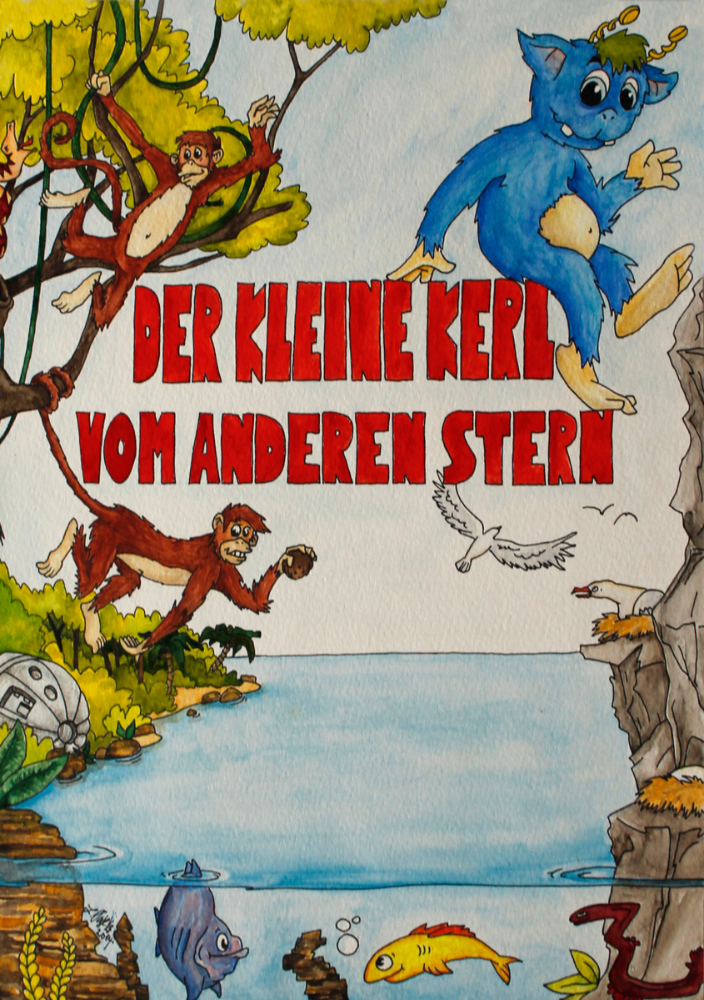

Projekte
Musicalplakat
- 
- 
Die Kreismusikschule Kon.centus in Neustrelitz inszinierte in der Vergangenheit mit Früherziehungskindern mehrere Musicalstücke im dortigen Landestheater. 2010 und 2014 durfte ich die Plakate dazu gestalten.
Das Erste war für ein Stück mit dem Namen Stille (Weih)Nacht?!, in dem es darum ging, dass Rumpelstielzchen die Weihnachtslieder klaut und Max und Moritz sie wiederbeschaffen sollen.
Das Zweite entstand für die Inszeniering Der kleine Kerl vom anderen Stern nach dem gleichnamigen Liederbilderbuch von Guido Lübeck und Katrin Weiher.